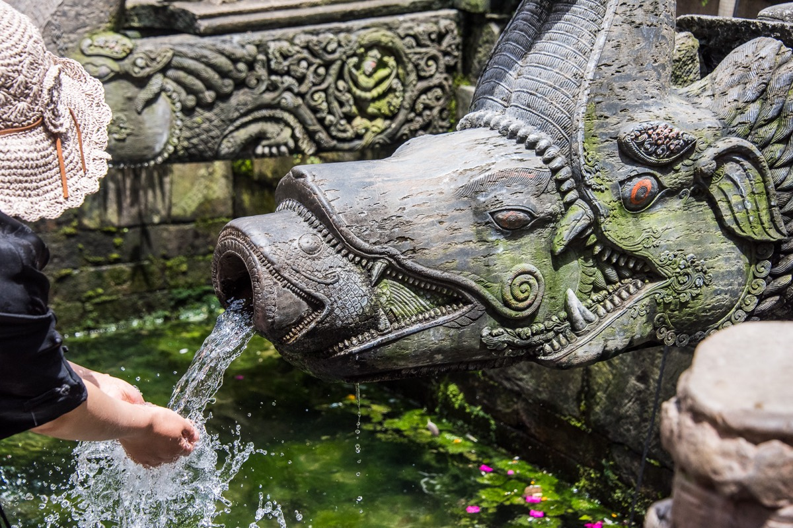
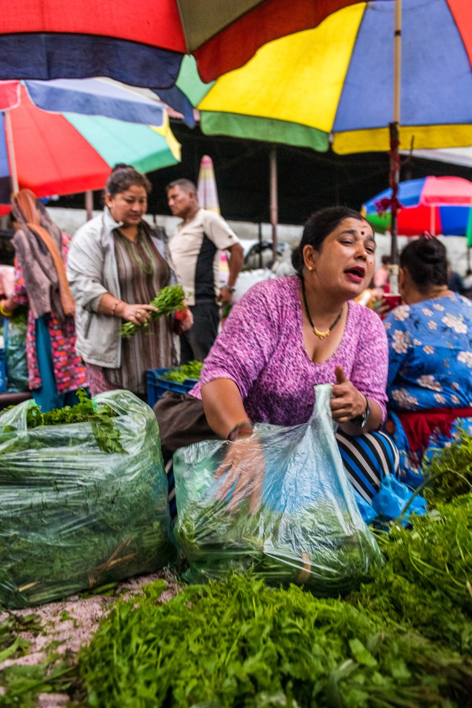
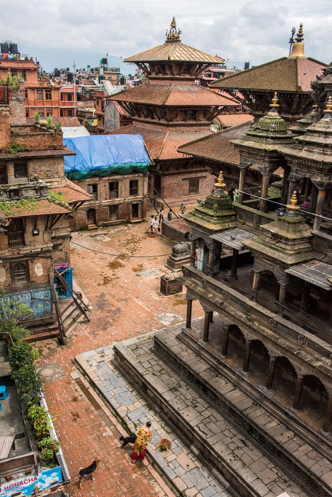
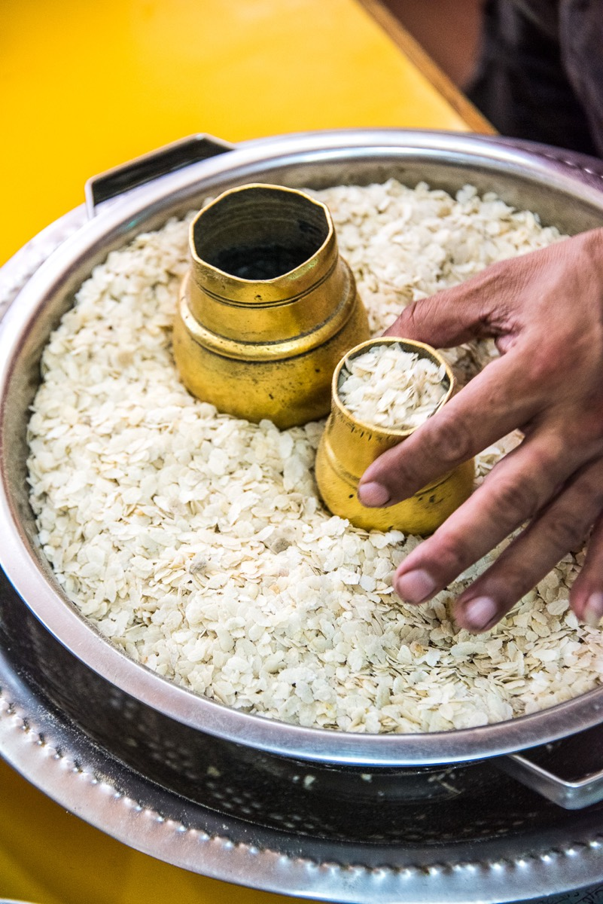
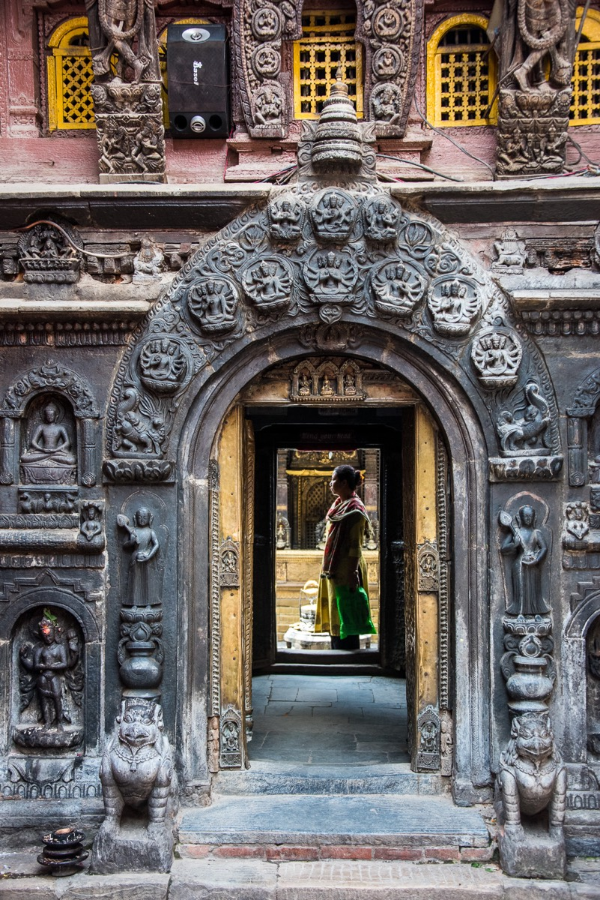
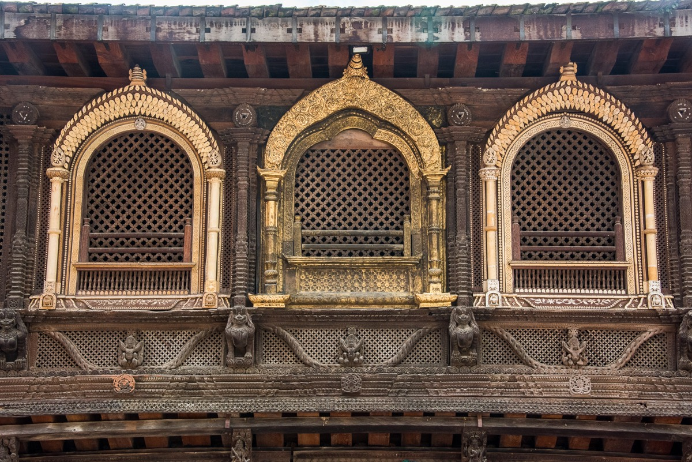
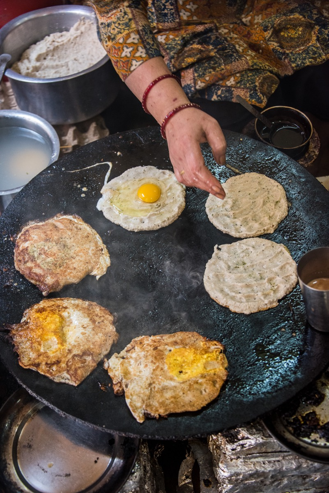

Bhaktapur: the Ancient City
& What the Earthquake Left
Bhaktapur — one of the three royal cities of the Kathmandu Valley, alongside Kathmandu and Patan — was one of the most severely affected areas in the 2015 earthquake that killed nearly 9,000 people across Nepal and brought down temples, palaces and historic structures across the valley.

Walking through Bhaktapur's Durbar Square now, the guide explains what you're looking at with a mixture of pride and honesty: about 95% complete. The remaining 5% is still being worked on. The reconstruction used the same materials where possible — the same stone, the same techniques of wood carving, the same traditions that produced the originals centuries ago. Distinguishing new from old requires attention, and the guide points out examples throughout.
The palace complex at the heart of Bhaktapur Durbar Square is approximately 500 years old. The courtyards, the carved wooden screens, the water features where the king washed his hands before prayer — all from around the 16th century, though elements have been added and restored across many periods. The square was, originally, a prison: it was where the king's family lived, enjoyed entertainment and stored valuables. The district court still operates directly behind it.
The Royal Palace:
Three Courtyards & a Living Goddess
The Royal Palace of Bhaktapur has been converted into a museum open to the public. It is organised around three main courtyards. The first is used for ritual purposes — animal sacrifice, dancing, the drinking of animal blood during festivals. The second contains the store rooms where the royal family kept jewellery and valuables. The third is the more intimate residential space.

In one of the inner rooms of the palace lives the current Kumari — a living goddess, a young girl selected from a specific caste and family lineage to embody the goddess Taleju. The Kumari visited during this tour is twelve years old. She sits in the window of her room. Visitors can come to see her, and she gives a blessing. Photography is permitted.
The role of Kumari is a significant one in Nepalese Hinduism. A girl serves as Kumari until she reaches puberty, at which point a new Kumari is selected. The institution predates the earthquake, predates the modern nation, and continues. The guide speaks about her with straightforward reverence — she is simply part of the palace, and has been for centuries.
Also in the palace: the king's bath, a stone pool where the king would wash his hands before proceeding to prayer and then to the various temple courtyards around the square. The pool is fed by a carved water spout, itself centuries old. The woodwork throughout — on the doors, the windows, the screens — is extraordinarily detailed, with figures of gods, protective serpents, and narrative scenes carved in the dark Nepalese sal wood that survives remarkably well.
The guide points to a water feature in one of the courtyards — a carved figure of Vishnu and Lakshmi in gold. The original was stolen. The replacement is new, and covered in gold leaf. He says this simply, without particular drama. In many of the temples and palaces around the Kathmandu Valley, the most valuable portable objects have been stolen — some removed during the political upheavals of the late 20th century, some earlier. What remains is largely what could not be easily carried.
The meditation space in the palace — a room used by the king for winter contemplation beside a fire — is noted by the guide as particularly beautiful, with carved wooden screens and a sense of enclosure. Upstairs is new construction; downstairs is old. The guide is clear about which is which.
Thirty Million Gods:
Which Temples You Can Enter
The guide opens his account of the square's temples with a clarification that saves confusion: Hinduism has approximately thirty million gods, and even he, who was raised in this tradition, does not know which deity occupies which temple at first glance. What matters is knowing which god you need for a particular purpose, and at that moment you remember.

The temples in Durbar Square include dedicated shrines to Nimssen (god of business), Krishna, Shiva (god of destruction and transformation), and various forms of Ganesh and other deities. They are of different architectural styles, which the guide explains in some detail:
Nepal has five distinct temple architectural styles. The most common in Bhaktapur is the Pagoda style (tiered roofs, multiple levels), which has its origins here and spread to East Asia — the guide notes that the pagoda form the world associates with China and Japan originated in Nepal. There is also the Shikhara style (a tall pointed tower, more North Indian in character), and three further styles including the Stupa form (domed, used for Buddhist monuments) and two others. The guide lists all five, though the translation into English is approximate.
Which temples you can enter as a non-Hindu varies. Some are open to all; others are restricted. The rule is not always posted visibly, and the guide handles it straightforwardly — this one yes, this one no, this one you can see from the outside but not go in. Nobody seems to find this troubling.
Beside one of the temples in the square stands a column with a metal bird at the top. The guide explains its significance: according to tradition, the king will die when this bird flies. As long as the bird does not fly, the king does not die. The bird sits atop the snake — the protective serpent deity that appears throughout the temple complex. The logic is entirely internal and entirely serious.
The Golden Temple
& the Rats That Cannot Be Killed
The Golden Temple — Kwa Bahal or Hiranya Varna Mahavihar — is a Buddhist temple in the old city, its exterior covered in gilt metalwork and its courtyard framing a central stupa. Entry requires a small fee. Inside, the atmosphere changes: quieter, more contemplative, the Buddhist tradition rather than Hindu.

Inside the Golden Temple live rats. Many of them. They move through the courtyard and the temple spaces freely. Nobody harms them. The guide explains the history: according to temple tradition, this is the place where the rat chased the cat — and because of that historical event (whether literal or mythological, he does not say), no one may kill a rat in this temple, and the rats must be fed every day. They are offerings. They are protected. They have been fed here for centuries.
The guide notes this with no particular sense that it is unusual. The rats are simply part of the temple.
The temple also contains very old paintings — murals of considerable age, the guide says, that are genuinely ancient and cannot be touched. The monastery attached to the temple has monks in residence. At the time of the visit, a group is chanting.
The guide also points out a green ball — a mandala, used for protection. The mandala is a form of family protection: kept in the home, it prevents negative forces from entering. People come to the temple in the morning to pray before it. This one is centuries old.
The Snake That Protects
& the One-Way Window
Throughout both the palace and the temple complex, two motifs recur with particular insistence: the protective serpent (Naga), which appears above doorways, around water spouts and at the base of columns, always in the role of guardian; and the carved lattice window, which has a specific functional quality the guide demonstrates.

From inside a room looking out through a carved wooden lattice screen, you can see the courtyard clearly. From outside, looking in through the same screen, you cannot see anything inside. The king could observe the courtyard, the rituals, the people — without being observed himself. The screens function as one-way glass, but made of wood and carved centuries ago.
The woodcarving tradition in the Kathmandu Valley is one of the great craft traditions of South Asia. The guide's assistant — a young man learning English who has come along for the practice — looks at the carved doors of the palace with the expression of someone who has spent his whole life around them and still finds them beautiful. He photographs them on his phone.
The Former Prison
& What the Square Used to Be
The guide notes in passing, as the tour ends at the edge of the square, that the whole of this area was once a prison — the city's place of detention and punishment, located here because the district court is directly behind. Kings and their families lived here too, which created the layered palimpsest of royal residence, ritual space and civic function that the square still embodies.

For the people of Bhaktapur, this is not history in the sense of something finished. The festivals still happen in these courtyards — the ritual dancing, the animal sacrifice, the processions. The Kumari is still chosen and still lives in the palace. The rats are still fed in the Golden Temple. The 2015 earthquake knocked things down; the community rebuilt them, using the same techniques, because these places are still in use.